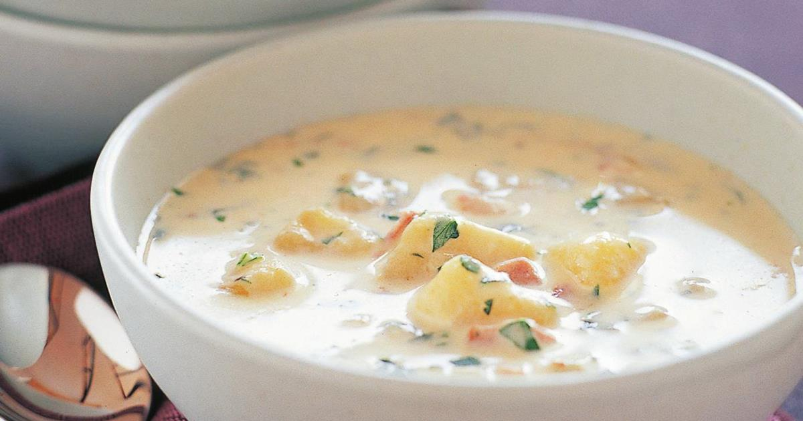

Potato & Bacon Soup

Description
A delicious winter treat
Ingredients
- 1 tbsp vegetable stock paste
- 1 tbsp chicken stock powder
- 200g bacon
- 1 tbsp butter
- 2 sticks celery
- salt, to taste
- black pepper, to taste
- 600g potato
- 950g water (use less for a thicker soup)
Steps
- Place celery & bacon into Thermomix. Turbo 3 seconds.
- Add both stocks, butter, 100g water, salt and pepper. Speed 3, 100c, 3 mins.
- Add 750g water and potato. Speed 1, 100c, 20 mins.
- Blend 10 seconds, speed 6